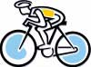
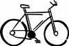

Training
Everyone's different, so advice about how long or hard you should train is useless. Instead, practice riding with a full load of gear until you can ride at least 75% of the distance you'd like to cover on a typical touring day, and not feel completely destroyed the next day. It's not uncommon to feel exhausted at the end of the ride and to feel that you'll be unable to ride tomorrow. The key is to ignore that and pay attention to how you actually feel the next day. A good night's sleep can do wonders not only for your physical ability but also your attitude.
The first time I wanted to do a century (a 100-mile ride) I picked up a bicycling magazine that had something like a six-week training schedule to get you ready for a century. I blew off the magazine, and here's how I trained: One day I went out and rode 60 miles. Two days later I did the century. And when I biked from El Paso to Austin (about 70 miles a day for two weeks), I did no training at all beforehand. I'm not saying this to suggest that everyone can start touring with minimal training, just to suggest that you might have more ability than you realize. Also, I've been a pure vegetarian my whole adult life and I attribute much of my endurance ability to how I eat.
Personally I think there's little point in touring by bike if you're ultimately going to be relying on an automobile, but this is a popular style of touring, and to each his/her own. Many of the commercial tours run this way. Anyway, if you go this route, deciding what to take and what to leave behind is generally not a problem.
Three ways to tour
Self-Supported, Camping. With this style of touring you bring everything you need and camp out along the way. It's the most challenging because you have to bring more stuff (tent, sleeping bag, food preparation items, etc.) -- but in my mind it's also the most rewarding.
Self-Supported, Motels. If you can afford it, you can stay in motels along the way. That dramatically cuts down on the amount of stuff you have to haul with you. Note that even if you camp only 10% of the time you'll still have to haul everything you need for camping 100% of the time. (Of course you could get creative/extravagant and mail your camping gear from one motel to one you'll be hitting a few days down the road, so you can camp in the future without having to haul all the camping gear).
Sag Supported. With this style you have a support vehicle (usually a van) going along for the trip. The van hauls all the heavy stuff and you meet up with it at the end of the day.
The BMI to measure fitness
Ut velit illum consequat consequat ipsum laoreet duis duis ut ullamcorper facilisi exerci tation praesent ad dolore eros odio hendrerit et ut hendrerit nostrud consequat. Diam iriure lobortis autem vero enim dolore tation, ut volutpat facilisis, magna hendrerit facilisis duis consectetuer vel commodo accumsan zzril.